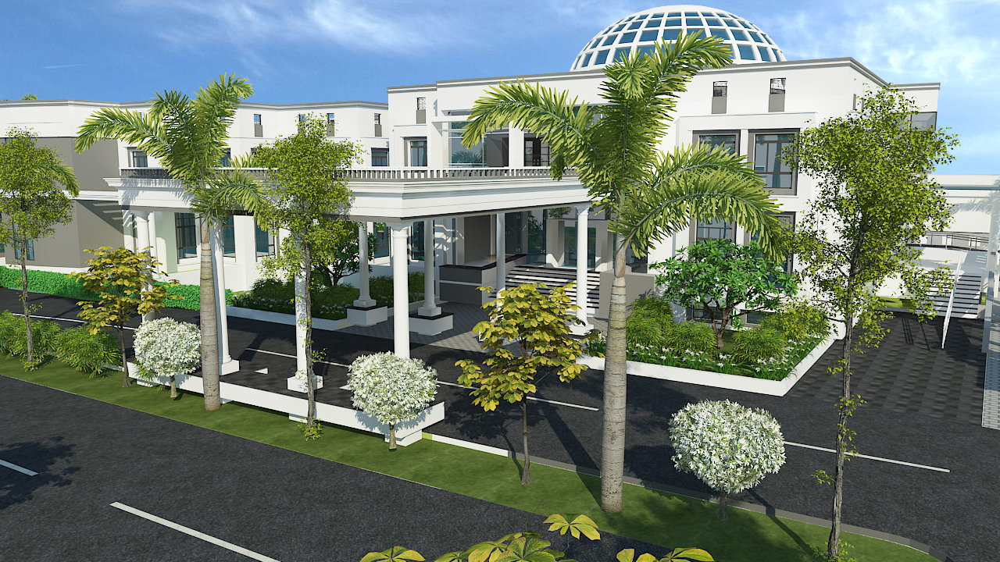
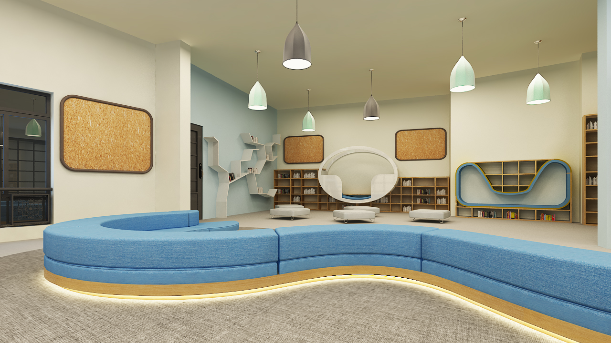
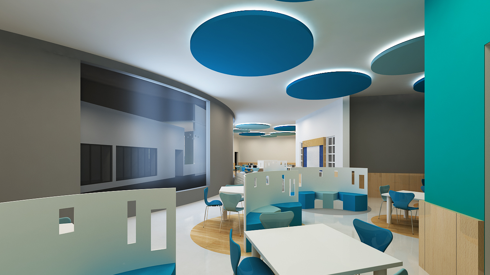
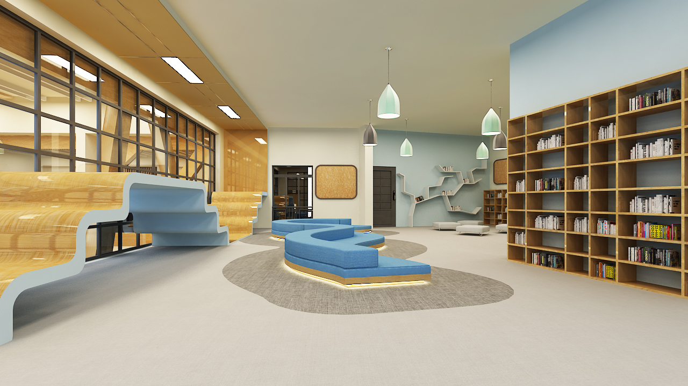
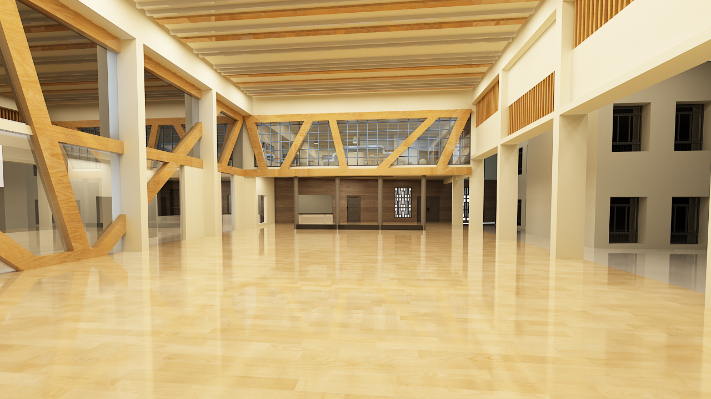
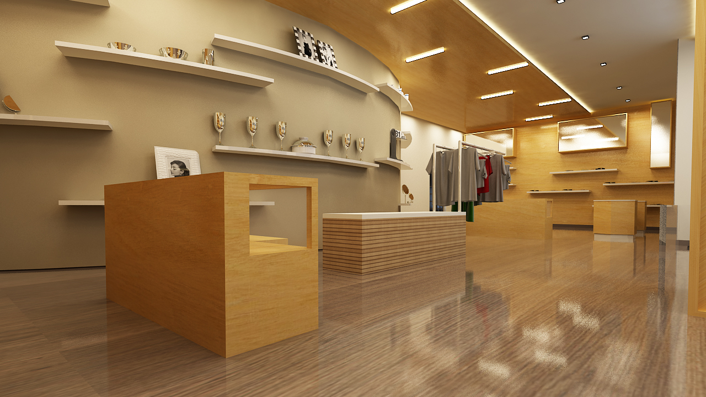
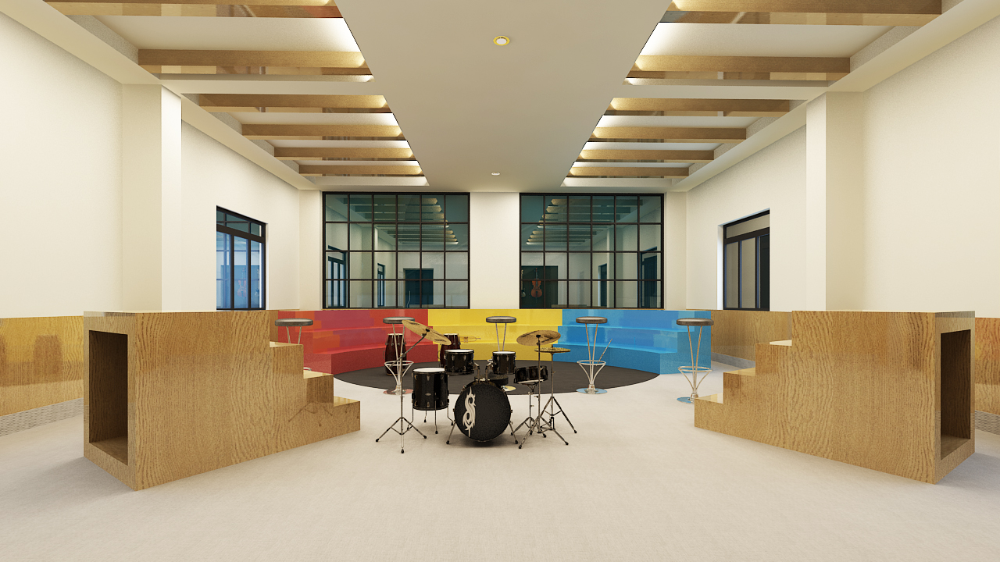

United World Academy

Nestled in the vibrant neighborhood of Sarjapur, Bangalore, this prestigious educational institution spans an impressive ten-acre campus with a meticulously designed built-up area of 1,60,000 square feet. The expansive facility has been thoughtfully planned to accommodate and nurture a diverse student body of 1,500 learners, providing them with an enriching educational environment that promotes both academic excellence and personal growth.
In alignment with the institution's commitment to international education standards, the school has been specifically designed to seamlessly integrate with the International Baccalaureate (IB) Curriculum's pedagogical approach and teaching methodologies. This educational philosophy is reflected in every aspect of the building's design and functionality. The exterior architecture makes a bold statement with its striking elevational features, masterfully crafted in Glass Fiber Reinforced Concrete (GFRC), creating an impressive facade that evokes the grandeur of classical architecture, complete with magnificent glass domes that serve as both architectural focal points and sources of natural illumination.
While the exterior pays homage to traditional architectural elements, the interior spaces present a thoughtful contrast with their contemporary design aesthetic. The modern, minimalist approach to the internal environments creates clean lines and uncluttered spaces that perfectly complement the school's forward-thinking educational approach. This deliberate juxtaposition of classical exterior and modern interior design elements symbolizes the institution's unique ability to balance time-honored educational traditions with progressive teaching methods and modern learning environments.







